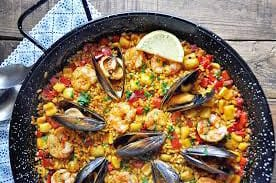
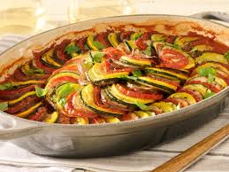

Lasangna
Lasagna originated in Italy during the Middle Ages.
The oldest transcribed text about lasagna appears in 1282 in the Memoriali Bolognesi ('Bolognese Memorials'), in which lasagna was mentioned in a poem transcribed by a Bolognese notary
while the first recorded recipe was set down in the early 14th century in the Liber de Coquina (The Book of Cookery)
It bore only a slight resemblance to the later traditional form of lasagna, featuring a fermented dough flattened into thin sheets, boiled, sprinkled with cheese and spices, and then eaten with a small pointed stick.
Paella
Muslims in Al-Andalus began rice cultivation around the 10th century.
Consequently, eastern Iberian Peninsula locals often made casseroles of rice, fish, and spices for family gatherings and religious feasts.
Along Spain's Mediterranean coast, rice was predominantly eaten with fish.
Spanish food historian Lourdes March notes that the dish "symbolizes the union and heritage of two important cultures, the Roman and the Arab.

''

Ratatouille
Ratatouille, a classic French vegetable stew, has a history rooted in the 18th century in Nice, France,specifically the region of Provence.
It's believed to have originated as a simple, peasant dish made fromlocally grown summer vegetables, reflecting a time when farmers used whatever produce was readily available.
The name "ratatouille" itself is thought to be derived from the Occitan word "ratatolha" and the French verb "touiller," meaning "to stir up".